Il nostro scopo è trasformare gli spazi verdi in luoghi armoniosi per migliorare la qualità di vita dei nostri clienti, con passione e professionalità.
Offriamo soluzioni complete per la cura e la manutenzione del tuo giardino a Brescia, Bergamo e Piacenza, utilizzando le migliori tecnologie e prodotti di alta qualità.
Sistemi di irrigazione automatizzati per un prato sempre verde e rigoglioso, progettati su misura per ogni spazio nelle province di Brescia, Bergamo e Piacenza.
Soluzione automatizzata efficace per goderti il giardino libero da insetti, non dannosa per te, per i tuoi bambini e per il tuo animale domestico.
Design personalizzato di giardini e aiuole, dalla progettazione al mantenimento, per avere angoli di paradiso sempre in ordine.
Installazione professionale di prato pronto per un risultato immediato e duraturo, con le specie più adatte al tuo terreno e al clima locale.
Taglio e modellatura professionale per siepi sempre perfette, che valorizzano ogni confine del tuo spazio verde.
Cure specializzate per la salute e la bellezza delle tue piante, con prodotti selezionati e metodi rispettosi dell'ambiente.
Veniamo da te, valutiamo il tuo spazio e ti proponiamo la soluzione migliore — senza impegno.
💬 Scrivici su WhatsAppPer rendere felici i nostri clienti e trasformare ogni spazio verde in un sogno realizzato.
Crediamo che la natura possa donarci preziosi momenti di relax e ricaricarci nelle nostre giornate frenetiche. Per questo è importante migliorare la qualità del nostro spazio verde, piccolo o grande che sia.
Ogni progetto ci dà l'opportunità di migliorare la vita dei nostri clienti, trasformando i giardini in veri e propri angoli di paradiso, dove le persone possono trovare l'armonia che cercano.
Ringraziamo chi sceglie ogni giorno la cura e la professionalità che mettiamo nel nostro lavoro — è la nostra più grande soddisfazione.
Operiamo nelle province di Brescia, Bergamo e Piacenza con interventi puntuali e professionali per privati, condomini e aziende.
Giardiniere professionista a Brescia e dintorni — ville, giardini privati, condomini e spazi aziendali.
Manutenzione e progettazione giardini a Bergamo — dalla posa del prato agli impianti di irrigazione automatizzati.
Servizi completi di giardinaggio a Piacenza — potatura, trattamenti fitosanitari, antizanzara e molto altro.
Progetti reali realizzati con passione nelle province di Brescia, Bergamo e Piacenza.
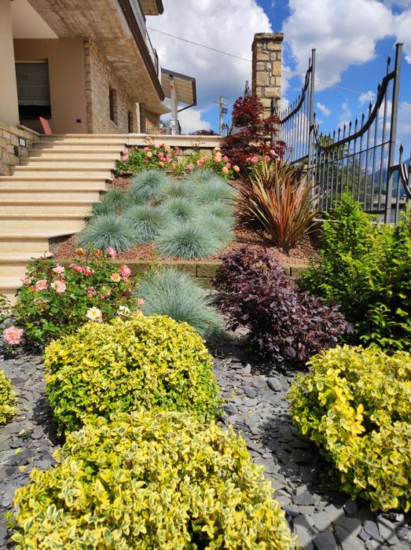
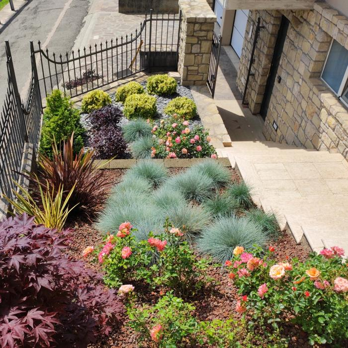
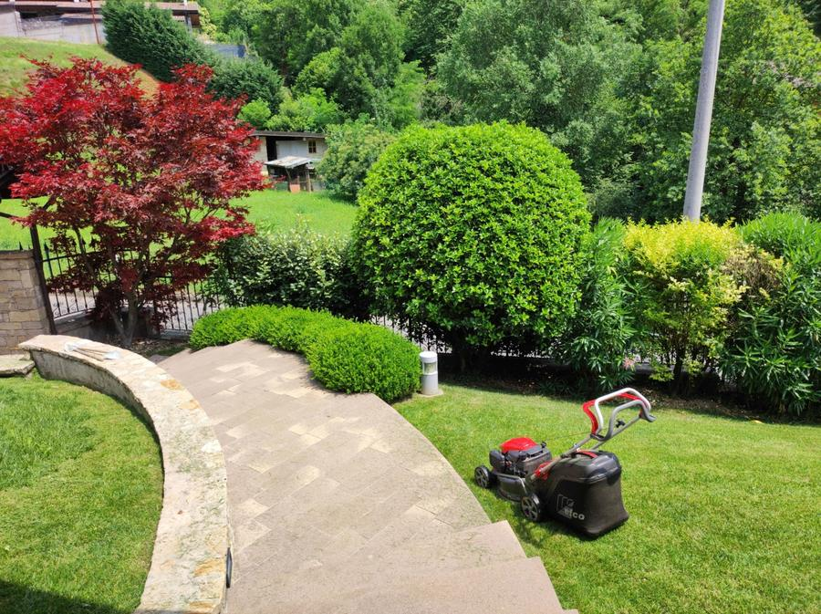
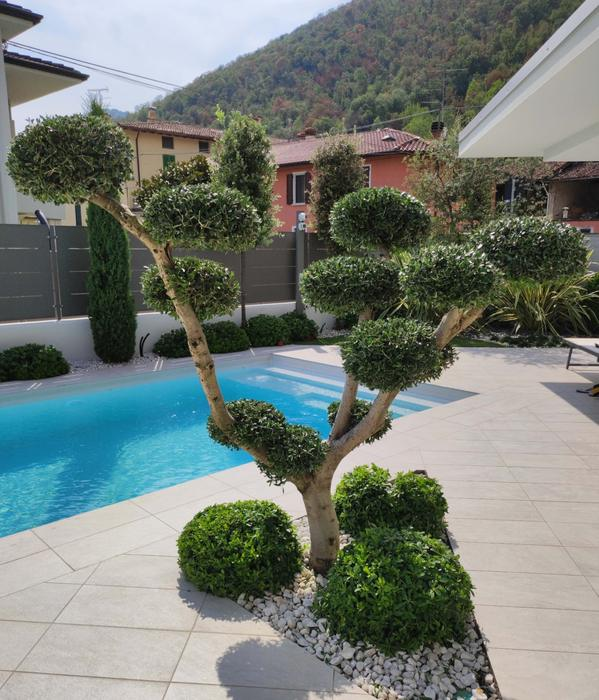
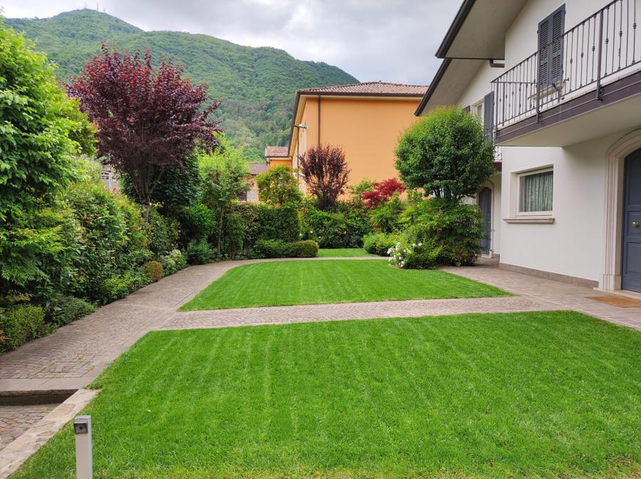
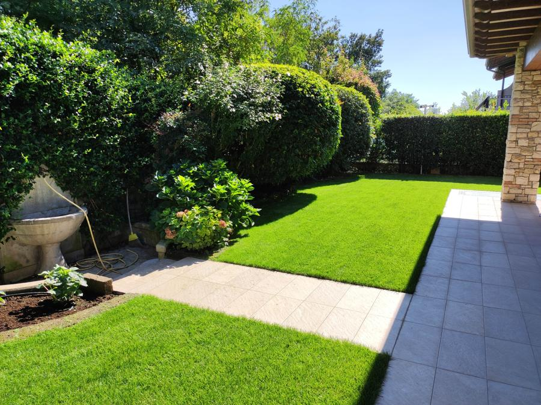
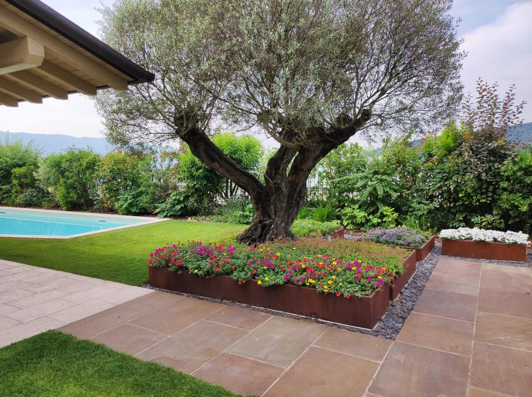
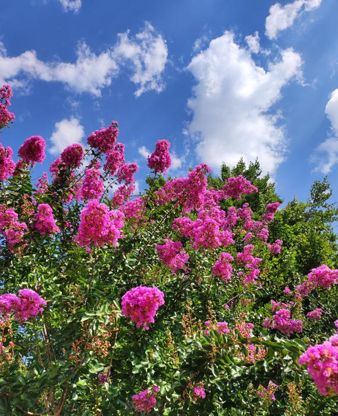
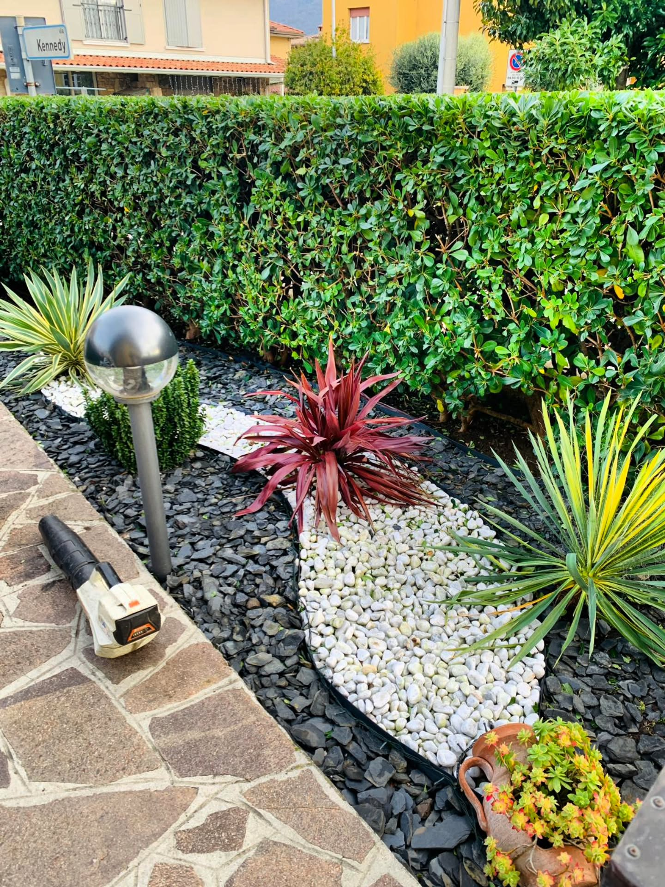
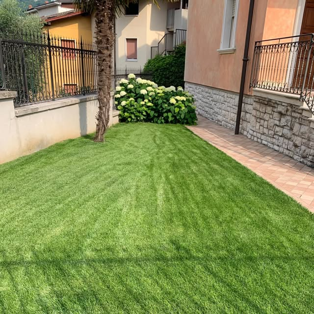
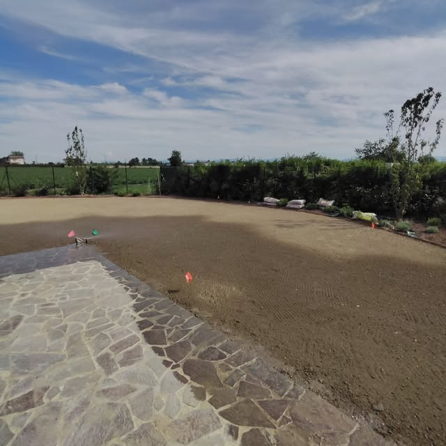
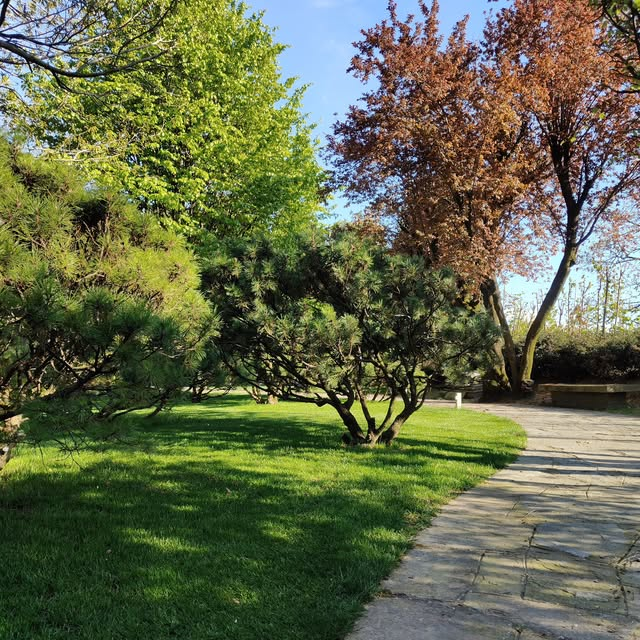
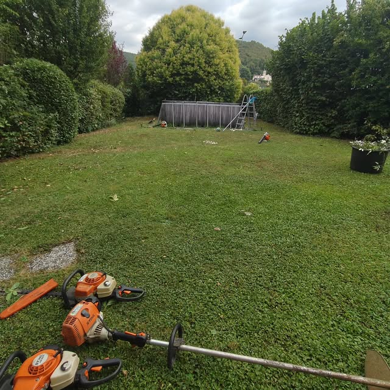
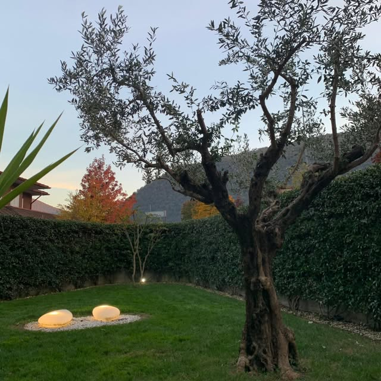
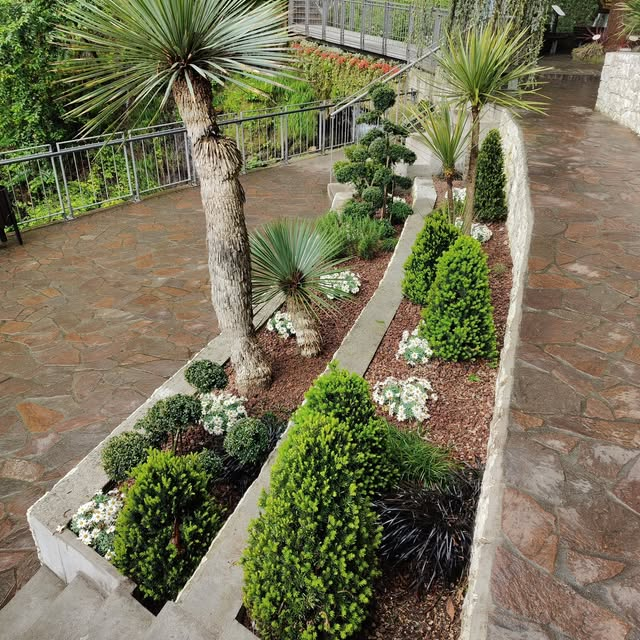
La soddisfazione dei nostri clienti è la nostra più grande ricompensa.
Vedi tutte le Recensioni Google"Un professionista serio e preparato sulla manutenzione di tutte le tipologie di verde. Ha posato con competenza e attenzione ai dettagli anche l'impianto di irrigazione automatico per l'orto e il giardino."
"Si vede che ha passione per il lavoro che svolge. È disponibile ed efficiente, con quel pizzico di simpatia che non guasta mai. Grazie Sandro!"
"Giardiniere competente e professionale. Non avendo più tempo per sistemare il mio giardino, ho delegato tutto a lui e sono molto soddisfatta. Ha avuto ottime idee per la disposizione di piantine e fiori."
"Avevo bisogno di tagliare il prato e cercavo un giardiniere. Finalmente il mio prato è tornato come una volta. Ottimo lavoro!"
"Oltre alla grande professionalità e cortesia, vengono suggerite le soluzioni migliori, anche tenendo conto dell'estetica degli spazi verdi che vengono riorganizzati al meglio."
"Affidabile, competente, puntuale e onesto. Mi ha tagliato un albero, tronchi, e cimato una siepe alta di oleandri, senza scomporsi. Consigliato!"
"Professionalità, precisione, rapidità e ottimo prezzo. Lo consiglio."
"Persona affidabile e competente, al passo con le nuove tecniche. Super consigliato!"
"Competenza, passione e onestà. Non si può pretendere di meglio."
"Gran professionalità, ottima la potatura del faggio, ordinato sul lavoro."
"Puntuale, preciso, pignolo e di parola. Lo consiglio vivamente!"
"Ragazzo in gamba, disponibile e competente! Ottimo giardiniere."
"Ragazzo affidabile e competente."
"Molto bravo e professionale!!! Top"
"Veloce e preciso."
"Persona competente, grazie."
Le risposte alle domande più comuni sui nostri servizi di giardinaggio.
Il costo dipende dal tipo di intervento e dalla dimensione dello spazio. Offriamo sempre un sopralluogo gratuito per valutare il progetto e fornire un preventivo personalizzato senza impegno. Contattateci al 389 456 5072 o su WhatsApp.
Sì, progettiamo impianti di irrigazione automatizzati su misura per ogni tipo di spazio, dai piccoli giardini domestici alle grandi proprietà aziendali, nelle province di Brescia, Bergamo e Piacenza.
Assolutamente sì. Il nostro impianto antizanzara utilizza prodotti specificamente formulati per essere non nocivi per persone, bambini e animali domestici, garantendo un giardino protetto in totale sicurezza.
Sì, offriamo sopralluoghi e preventivi gratuiti senza impegno in tutte le zone che serviamo: provincia di Brescia, Bergamo e Piacenza. Contattateci su WhatsApp o per email.
Copriamo l'intero ciclo di vita del giardino: dalla progettazione e posa del prato a rotoli, all'installazione di impianti di irrigazione automatizzati e sistemi antizanzara, fino alla manutenzione ordinaria con potatura siepi e trattamenti fitosanitari. Ogni intervento è personalizzato e seguito direttamente da Sandro, che garantisce standard di qualità elevati in ogni fase del lavoro.
Sì, offriamo servizi di manutenzione del verde per privati, condomini, ville e aziende nelle province di Brescia, Bergamo e Piacenza. Contattaci per un preventivo personalizzato e gratuito.
Non dovrai più preoccuparti di nulla, penseremo a tutto noi!